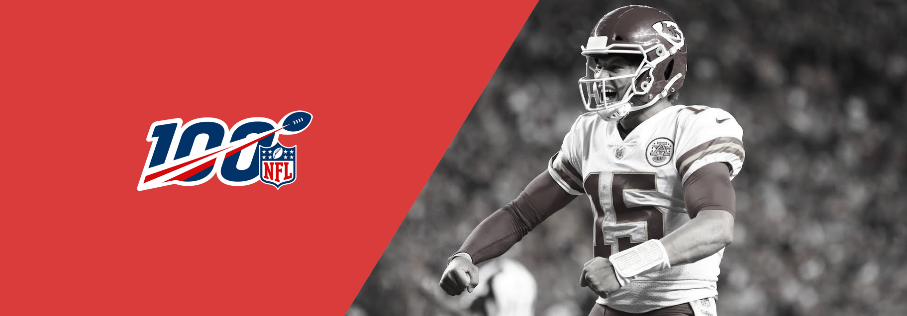
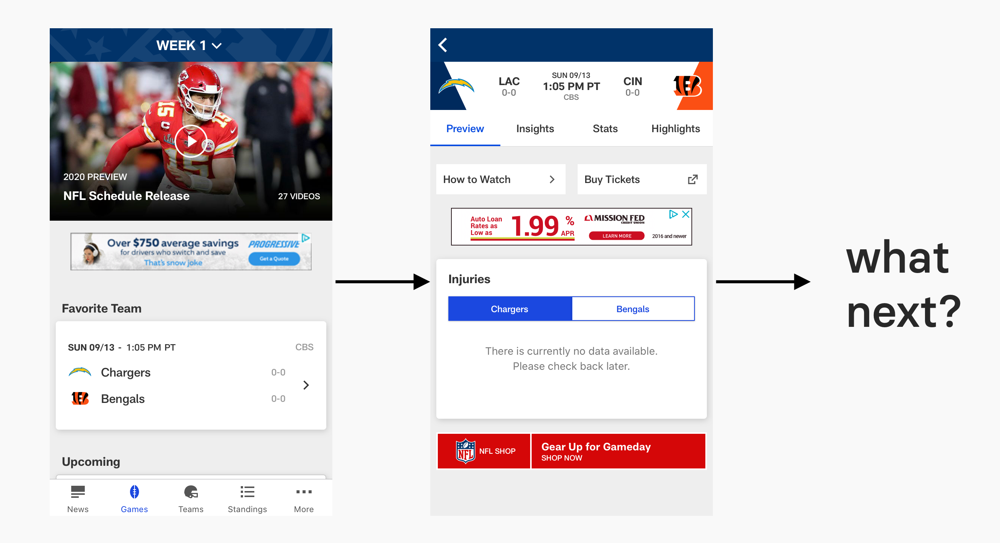
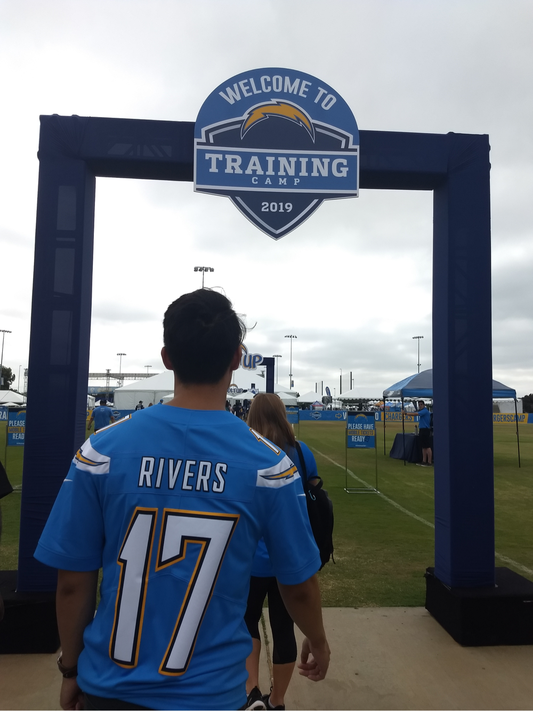

.

National Football League
PRODUCT DESIGN INTERNSHIP | SUMMER 2019
Introduction
I worked as a Product Design Intern on the UX/Product Design Team at the National Football League. My two biggest projects were creating a quickstart guide for the design system and increasing engagement with the Insights page. In addition, I worked across several smaller projects doing user research.
Outcomes
- The design system guide cut onboarding time to <4 minutes to NFL visual guidelines.
- User research pertaining to NFL mobile app/website to be heavily used in data visualization as the NFL begins to emphasize quantitative user research.
- Use cases/research for the Insights page to decrease bounce rate by 20% and the implementation of a floating action button.
1. Streamlining the Design System
The Problem
The NFL is a fast paced environment, which sometimes made it stressful when designers and developers didn't communicate with each other clearly. In addition, work needed to constantly be presented to stakeholders, so those stakeholders needed to quickly understand the NFL's design language.
My Task
I was tasked with creating a Quickstart Guide for the NFL's design system: Facemask. I wrote the guide, created assets to be used in the Quickstart Guide, and ensured the guide would be scalable across all digital platforms.
Purpose
The Quickstart Guide would onboard designers, developers, and stakeholders to the design system and reduce interdepartmental friction. Through competitive analysis of other design guidelines and guerilla interviews with NFL employees, I learned that everyone wants information that affords scanning and easily accessible resources. Therefore, my primary goals when creating the site were readability, brevity, and clarity.
I've screen captured some pages but you can check out the entire guide below.
I'm proud to say that the guide received extremely positive feedback as it cut onboarding time to <4 minutes to NFL visual guidelines.
The final product: a quickstart guide introducing relevant stakeholders to the NFL's design system
2. User Research
I worked on user research across multiple projects to understand how a user's goals/needs can change throughout the year. The NFL had classified types of users who digest NFL content (recreational, fanatic, etc). I conducted interviews to identify the type of fan and understand what kind of experience they wanted at training camps and on the NFL's digital products.
My responsibilities included/used:

Qualitative User Research
Our team attended the training camps of the LA Rams, LA Chargers, and Dallas Cowboys to conduct ethnographic studies and interview fans. I interviewed 3 fans at each training camp (9 total interviews, ages 17-51) to learn about their dynamic goals spanning from the off-season to the pre-season.
The initial assumption was that because training camps are team-specific, the majority of attendees are fans who follow their team closely. When in reality, fans who attended NFL training camps had extremely diverse levels of devotion. Some were looking for a new team to follow, some wanted autographs from their favorite players, etc. Being able to speak with a diverse fanbase afforded a rich understanding of their own personal goals/needs.
Fans don't only want goals for their team, they have their own goals/needs as well. It was important to note that different types of fans set different personal goals. A recreational fan might just want to watch half their team's games. A fanatic might want to attend every possible training camp and tailgate. The goal was to learn about the user journey throughout the week and how they digested football out of season.
Through my user interviews, I identified the type of fan, learned about their goals, and conceptualized how the NFL may create an experience to satisfy their needs.

Quantitative User Research
To complement this qualitative user research, I worked with the UX team to handle results to transform interview responses into quantitative data. These responses were collected across a wide range of projects, including but not limited to: unmoderated user testing of the NFL website/app and overall fan satisfaction with NFL products.
- Taking this data-driven approach allows the NFL to present results of their products/services across multiple platforms, making it plausible to track the NFL's growth through data visualization.
3. NFL Insights Feature
The Insights feature is a feature intended to build narrative for a football game. It helps the user digest specific storylines for a matchup between 2 teams and allow them to develop their own predictions/opinions.
However, engagement with the feature was low.
Insights: Crafting a Story
Through user interviews, my goal was to understand what kind of insights users would be likely to read based on the context of:- Level of understanding
- Team stats
- Player stats
- Specific matchups
These points would help the NFL craft stories that fans anticipate, but also ones they've never would've considered. For example, if a matchup features two teams with legendary quarterbacks, fans would probably want to know their all-time records against each other. But wait...
- What if Team A hasn't lost to Team B in overcast weather?
- What if one of Team B's running backs always scores 3 touchdowns against Team A?
Insights encourage fan discussion by offering suggestive statistics.
Use Cases
I also constructed use cases for a possible floating action button (FAB) on the Insights page. We found that users simply weren't engaging with other parts of the app once they reached the Game Center.
Users weren't engaging with other parts of the app once they reached Game Center
Therefore, I determined the FAB would have numerous uses, such as when an insight gets added, but primarily when a significant event occurs within the app:
- You're watching the game, scroll down to read some insights, and you miss an 85 yard touchdown. The FAB would navigate you to the highlight clip.
- You're reading some insights and your team just signed a top player. The FAB would navigate you to the article.
The FAB would have more use cases within the Insights page because insights are constantly populating the page, whereas scrolling isn't required in other
Result
My use cases/research served as a foundation for an A/B test during the 2019-20 NFL season: one version with the FAB and one version without. Bounce rate on the Insights page decreased by 20% for the test that included the FAB.

One of many (30+) use cases for a floating action button
Takeaways from the Internship
With the world rapidly shifting from print to digital, design systems are quickly becoming more important. To be plopped into the NFL during the final stages of its rebranding helped me learn immensely about the entire design process and how it's applied in a seasonal environment.
I also had the pleasure of presenting the importance of the design process/design system to the entire NFL Media department.

Our team emphasized understanding the fan. Football can be a massive part of someone’s life, but it can be a time killer for another. Our primary focus was to understand the different kinds of fans within the football space, and be able to design the insights page to cater towards all types of fans.
Working for the NFL the summer of its centennial season was a rollercoaster. Thanks for letting this Chargers fanboy experience a once in a lifetime opportunity.
